all transients in sector38 (23 total)
Each figure has three panels. The top panel shows the transient light curve, the middle panel shows the local background (estimated in an annulus), and the bottom panel shows a "background-model corrected" light curve. Details about the background model are in the README.
The vertical red line marks the time of discovery reported to TNS. Other useful metadata from TNS is in the figure title.
Note that the top and bottom panel are in magnitudes, while the middle panel is in differential flux units. The magnitudes are calibrated to the flux in the reference image used for image subtraction. Thus, flux from the host galaxy is included in these magnitudes.
3-sigma upper limits are plotted as triangles with no errorbars. A typical limiting magnitude is 19.6 in 30 minutes or 18.4 in 200 seconds (for low backgrounds).
The links allow you to download the light curve data as a text file.
More details in the README.
2021msn 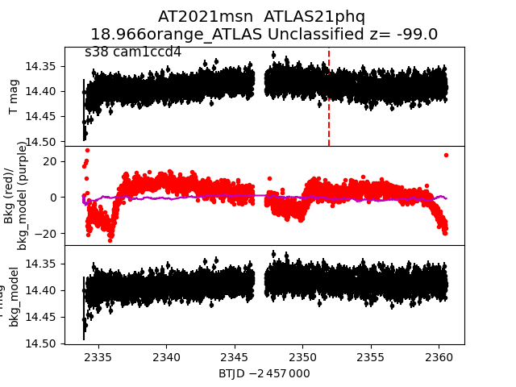 2021njq 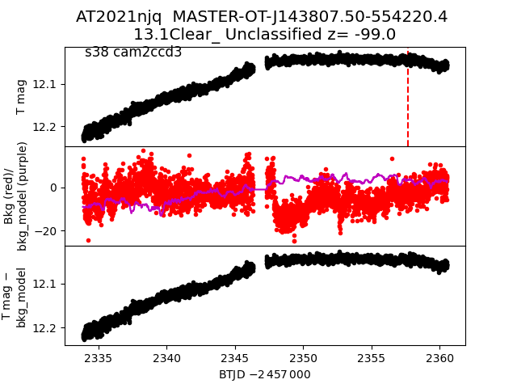 2021lob 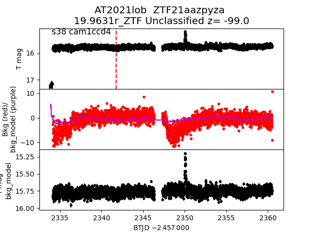 2021ktl 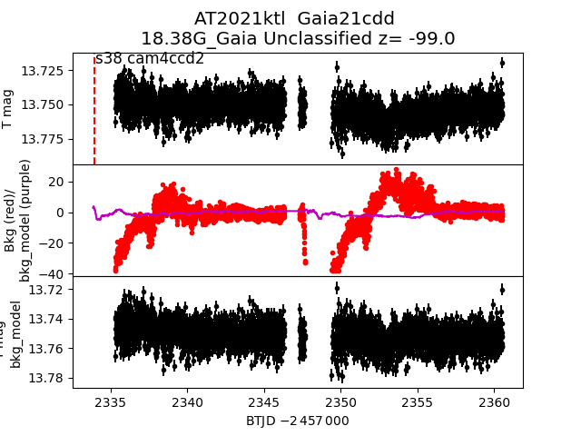 2021nnz 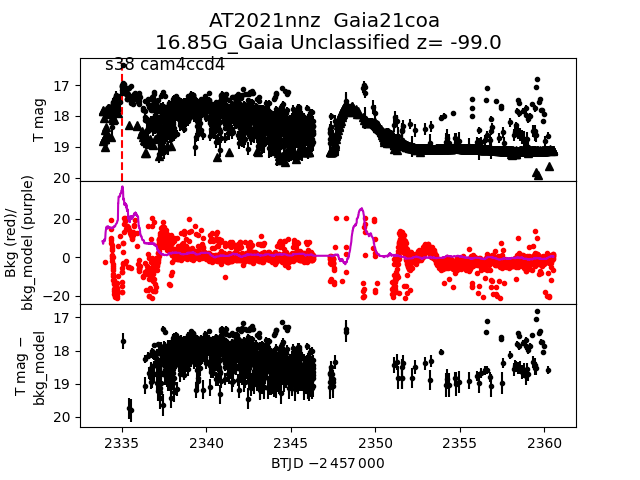 2021nam 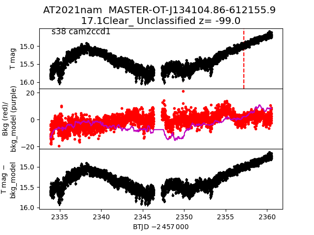 2021kti 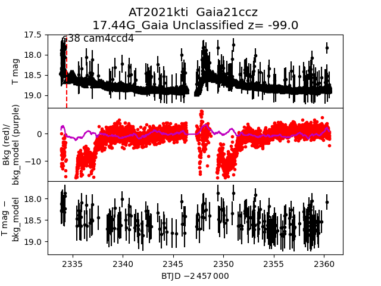 2021mil 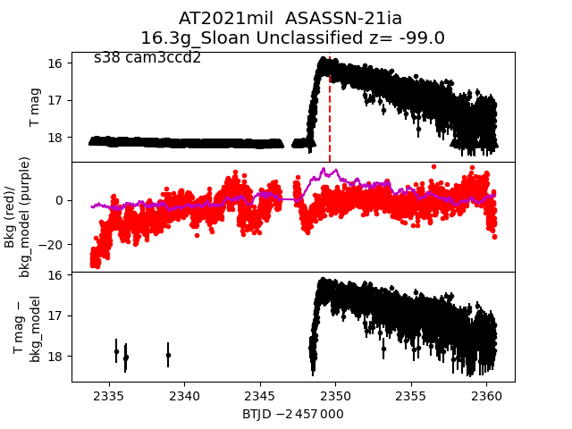 2021kzb 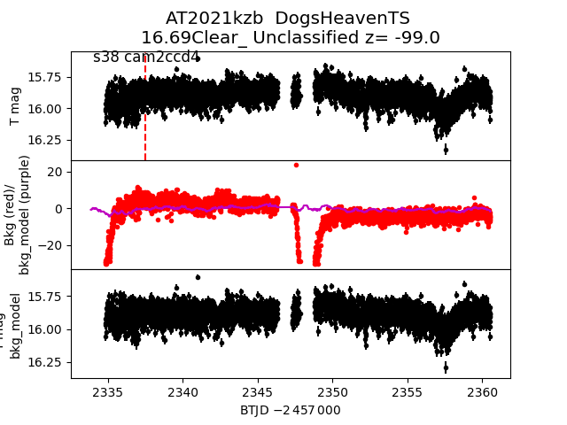 2021mgg 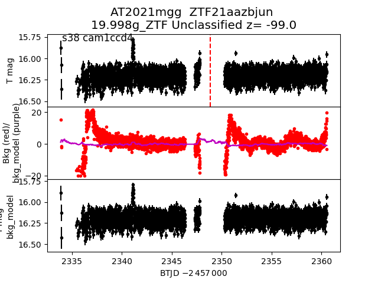 2021nan 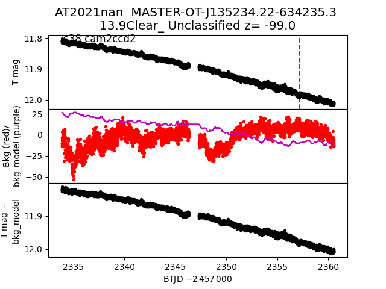 2021muw 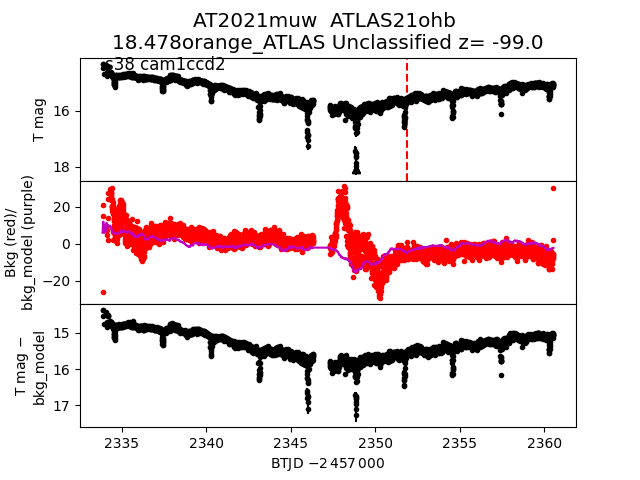 2021loa 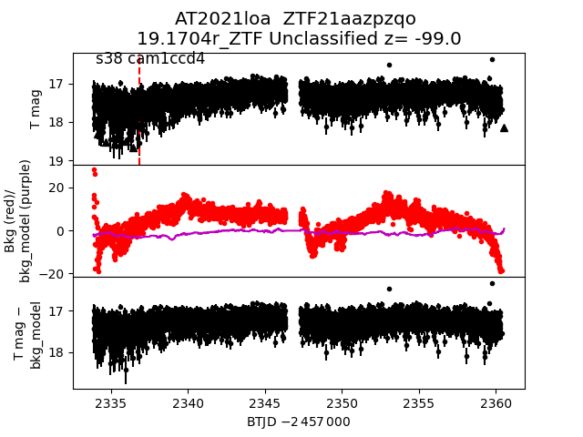 2021msr 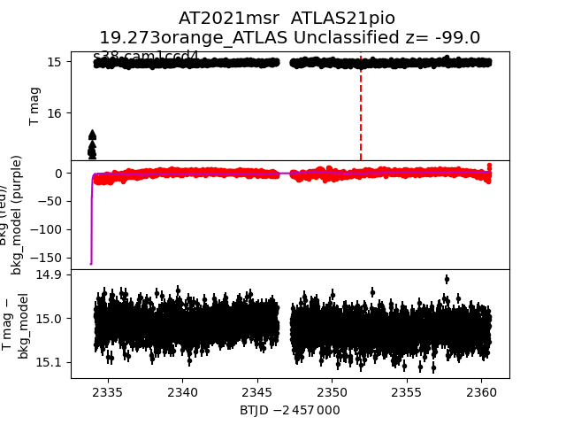 2021njr 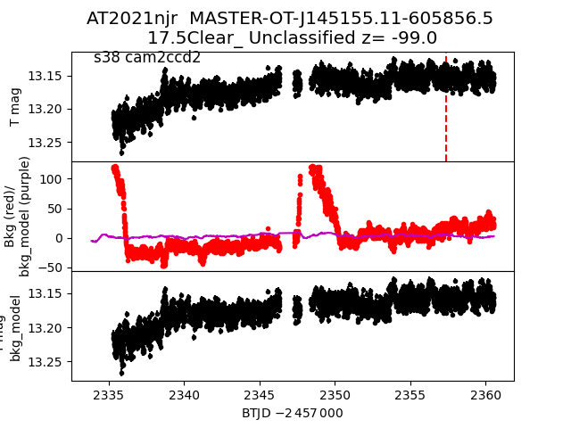 2021kvp 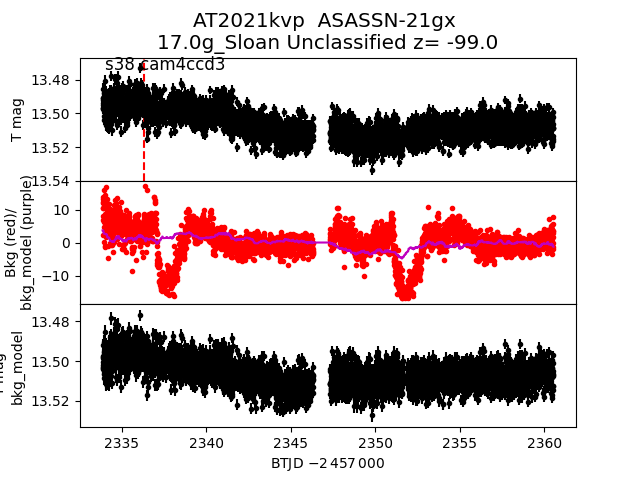 2021kvy 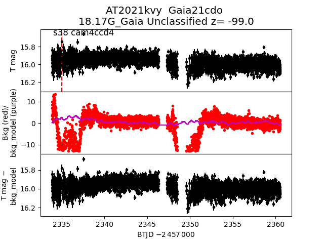 2021kpz 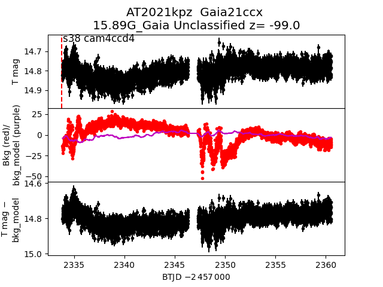 2021ltk 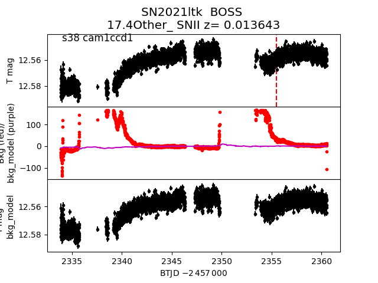 2021ktq 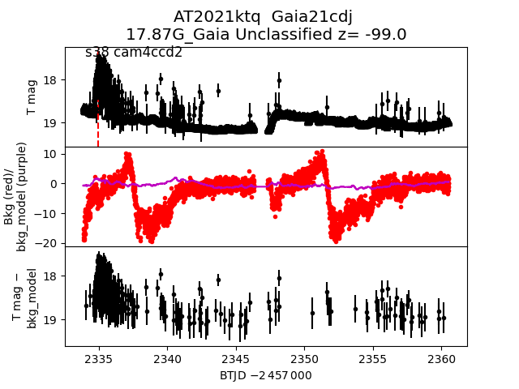 2021nao 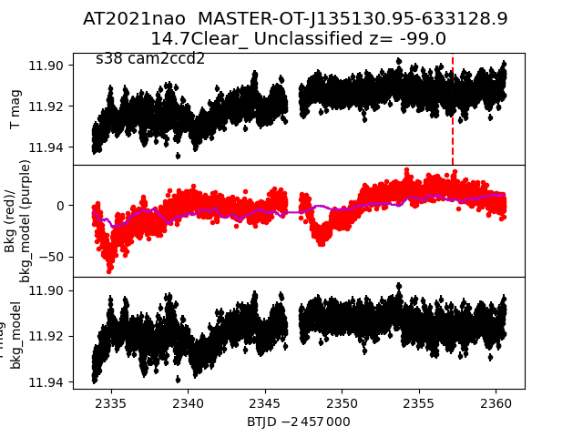 2021lws 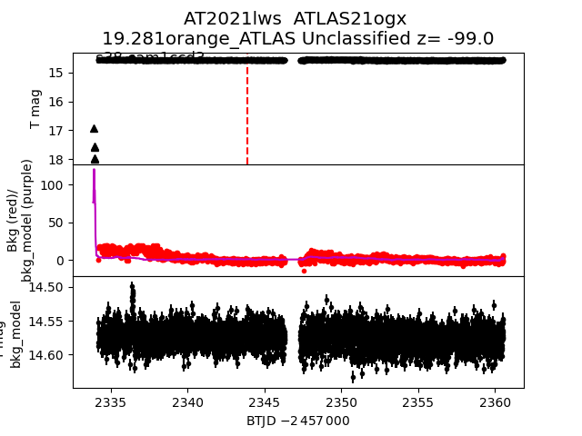 2021nke 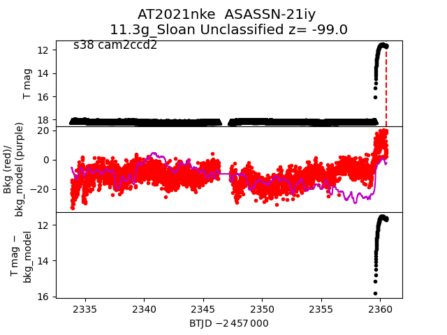